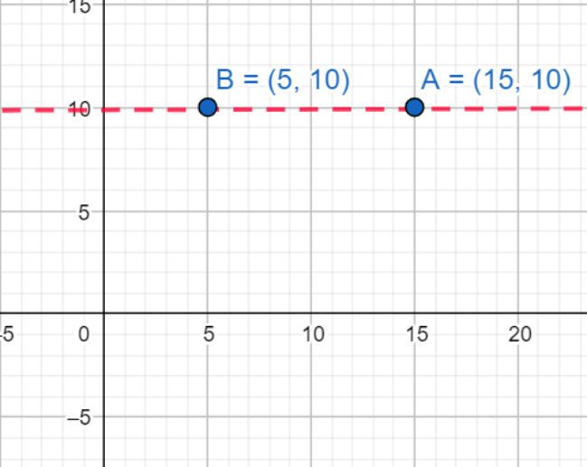

Unidad 5
5.2 Distancia entre dos puntos.
Plano cartesiano.
Para calcular la distancia entre dos puntos es necesario recordar el plano cartesiano. El plano cartesiano es un diagrama que nos permite localizar puntos específicamente dentro de un sistema de coordenadas que se conocen como Coordenadas Rectangulares, ya que para localizar cada punto P (x,y), debes avanzar la distancia indicada por la coordenada x sobre el eje horizontal y la distancia y sobre el eje vertical.
Por ejemplo, en la siguiente imagen se puede observar un punto A(15, 10), y se puede notar que con respecto al eje horizontal se encuentra en la posición 15 mientras que respecto al eje vertical se encuentra en la posicion 10, como lo indican las coordenadas.
El plano cartesiano puede contener muchos puntos y hay veces que surge la necesidad de encontrar la distancia entre dos de ellos por lo que para eso vamos a considerar dos posibles casos que se nos pueden presentar.
Distancia entre dos puntos.
Primer Caso. Distancia entre dos puntos sobre un mismo eje.
En este caso los puntos que estamos analizando se encuentran sobre un mismo eje, es decir que si se traza una recta que toque ambos puntos la recta será paralela al eje horizontal o al vertical, o bien la línea pasará sobre alguno de los ejes.
Al observar las coordenadas de los puntos que entran en este caso, podremos observar una particularidad, y es que los valores de x o de y, van a ser iguales para ambos puntos, y el otro valor será diferente para ambos.
Entonces, para encontrar la distancia entre los dos puntos, vamos a realizar una resta con los valores que sean diferentes, y vamos a tomar el valor absoluto del resultado de dicha resta ya que la distancia siempre se expresa con números positivos.
Ejemplo.
Se tienen los siguientes puntos en un plano cartesiano, calcule la distancia entre ellos.
Observamos que el valor de y es el mismo para ambos puntos, y si trazamos una recta que pase por ambos puntos, observaremos que esta es paralela al eje horizontal.
Por lo que ahora vamos a calcular la distancia haciendo una resta entre los valores de x que tiene cada punto, ya que estos son los que son diferentes entre sí.
Y de esta forma tan sencilla es como se calcula la distancia entre ambos puntos.
Si los puntos se encuentran paralelos al eje vertical, el procedimiento sigue siendo el mismo pero ahora se restan los valores “y” de ambos puntos. Por ejemplo, vamos a calcular la distancia entre los siguientes dos puntos.
Vemos que al trazar una recta que pase por ambos puntos, esta resulta ser paralela al eje vertical, y además vemos que el valor “x” de ambos puntos es el mismo, por lo que hay que realizar la resta entre los valores “y” ya que estos son diferentes entre sí.
Y de esta forma encontramos la distancia entre ambos puntos.
Segundo caso. Distancia entre dos puntos que no estén sobre un mismo eje.
Con base en el teorema de Pitágoras es posible calcular la distancia entre dos puntos en el plano cartesiano. La intención es construir un triángulo rectángulo. Considera dos puntos cualesquiera, P1 y P2, en el plano.
Al unir a los dos puntos con una línea recta, la distancia entre los dos puntos corresponde a la longitud del segmento de la recta que los conecta, denominamos a esto como d1,2
Para encontrar la forma de determinar la distancia del segmento que une dos puntos se dibuja una recta paralela al eje Y y que pase por el punto P1 y una recta paralela al eje X que pase por el punto P2; el punto donde se intersectan las rectas que se dibujaron se le denomina P3.
Observa en la siguiente figura que ahora se tienen tres segmentos los cuales forman un triángulo rectángulo. Para encontrar un triángulo semejante al de la figura anterior, a cada segmento se le asignará una letra, entonces se tiene:
d1,2 = c
d1,3 = b
d2,3 = a
En la figura anterior el segmento c corresponde a la hipotenusa y los segmentos a y b los catetos. Para poder calcular la distancia es necesario obtener las coordenadas de cada punto, supongamos que las coordenadas para el punto P1 son (x1, y1), las coordenadas del punto P2 son (x2, y2), y por la forma en que construimos el punto P3 sus coordenadas son (x1, y2).
A partir de utilizar la ecuación para calcular la distancia entre dos puntos en la recta numérica, d(A,B)=|A-B|, y con base en el teorema de Pitágoras se puede deducir la fórmula para calcular la distancia entre dos puntos en el plano cartesiano. Para calcular el tamaño del segmento a, que corresponde a la distancia entre los puntos P2 y P3 , primeramente hay que observar que poseen la misma coordenada en y; puedes visualizar que estos dos puntos se encuentran sobre un mismo eje. Aplicando la fórmula para calcular la distancia en la recta numérica se tiene.
d(P2, P3)=|x1-x2|=a
De manera semejante, se puede calcular el tamaño de segmento b, que corresponde la distancia entre los puntos P1 y P3, en este caso estos puntos comparten el mismo valor de la abscisa x, se puede deducir que.
d(P1, P3)=|y1-y2|=b
Recuerda que el teorema de Pitágoras se expresa como:
a2+b2=c2
Sustituyendo las expresiones obtenidas para calcular la distancia se tiene la siguiente ecuación.
( | x1 - x2 | )2 + ( | y1 - y2 | )2 = c2
Puesto que el cuadrado de un número siempre es positivo se puede omitir el valor absoluto llegando a la expresión:
( x1 - x2 )2 + ( y1 - y2 )2 = c2
Ten en mente que lo que se quiere calcular es la distancia entre los dos puntos, P1 y P2, y que corresponde al segmento c, por lo tanto es necesario manipular la ecuación para despejar la variable que se busca, aplicando la raíz cuadrada en ambos lados de la ecuación se tiene que:
√(( x1 - x2 )2 + ( y1 - y2 )2) = c
Regresando a la definición de distancia y recordando que corresponde a d(P1, P2) , la fórmula final es:
d(P1, P2) = √(( x1 - x2 )2 + ( y1 - y2 )2)
Al definir que P1 y P2 son dos puntos cualesquiera en el plano cartesiano, la fórmula anterior es la fórmula general para calcular la distancia entre dos puntos sobre el plano cartesiano.
Ejemplos.
Ahora que hemos definido la fórmula general para encontrar la distancia entre dos puntos cualquiera, vamos a ver un ejemplo de esto.
Se tienen los puntos A(5,10) y B(-8, 9) calcular la distancia entre ambos puntos. Lo primero es identificar correctamente los componentes de las coordenadas de ambos puntos. Así que recordemos que en un sistema de coordenadas se expresa primero el componente horizontal que se representa mediante una “x” y después el vertical representado por una “y”, entonces tenemos los siguientes datos.
xa = 5
ya = 10
xb = -8
yb = 9
Hagamos que el punto A sea nuestro P1 y B nuestro P2. Entonces podremos decir lo siguiente.
x1 = xa = 5
y1 = ya = 10
x2 = xb = -8
y2 = yb = 9
Ya con esto tenemos los datos que necesitamos para hacer uso de la fórmula y encontrar la distancia entre dos puntos.
Escribimos la fórmula.
d(P1, P2) = √(( x1 - x2 )2 + ( y1 - y2 )2)
Sustituimos los datos que tenemos.
d(P1, P2) = √(( (5) - (-8) )2 + ( (10) - (9) )2)
Quitamos los paréntesis de adentro, recordemos que los paréntesis indican multiplicación y qué menos por menos es más.
d(P1, P2) = √(( 5 + 8 )2 + ( 10 - 9 )2)
Realizamos las sumas o restas según sea el caso.
d(P1, P2) = √(( 13 )2 + ( 1 )2)
Elevamos al cuadrado.
d(P1, P2) = √( 169 + 1 )
Sumamos.
d(P1, P2) = √( 170 )
Calculamos la raíz cuadrada.
d(P1, P2) = 13.038
Y de esta forma hemos calculado la distancia entre los puntos A y B.